¿Que es AMovil?
AMovil es una aplicación móvil complementaria de AM enfocada para los ejecutores de mantenimiento interno. Este capítulo contiene información básica para su comprensión y uso. Se plantea una visión general sobre la interfaz del usuario y sobre los elementos que aparecen en pantalla a manera de convenciones generales.
Se aprende a interpretar los comandos y a seleccionar las opciones de los módulos y submódulos, para ejecutar las funciones propias de la aplicación.
Una vez se ingrese a la aplicación (APK suministrada por WIN Software), se visualiza la ventana para iniciar sesión:
 Imagen 1. AMovil - Iniciar Sesión
Imagen 1. AMovil - Iniciar Sesión
Cuando se ingresa a la aplicación se muestran los dashboards sin carga de datos como se visualiza a continuación:
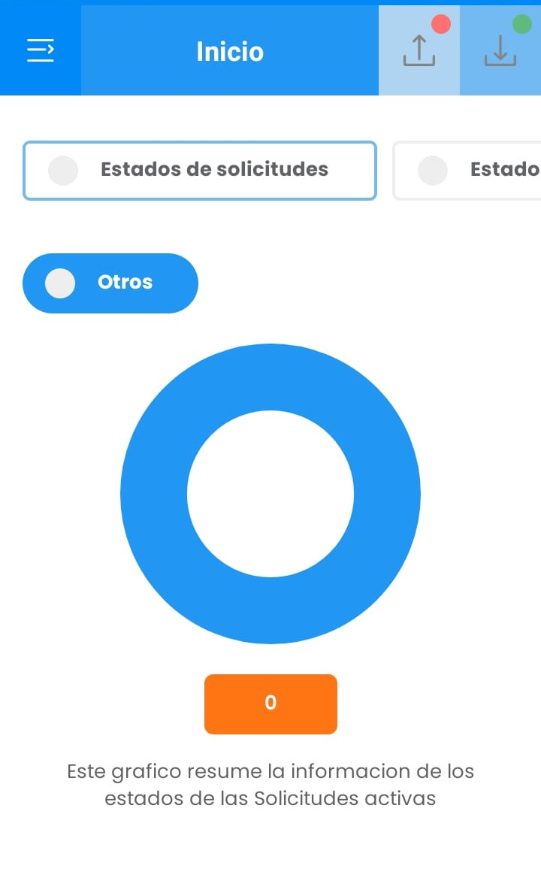 Imagen 2. AMovil - Inicio
En la parte superior derecha se visualizan los siguientes íconos que representan la funcionalidad de sincronización:
: descarga la información de la base de datos para comenzar a trabajar con la aplicación. Al dar un toque aparece un mensaje de advertencia:
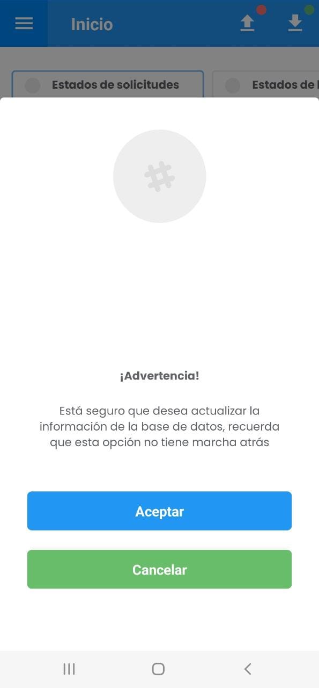 Imagen 3. AMovil - Mensaje Advertencia descarga
Para continuar dar un toque en Aceptar.
Para evitar el proceso dar un toque sobre el botón Cancelar.
Una vez se inicie el proceso de descarga, se indica el avance así:
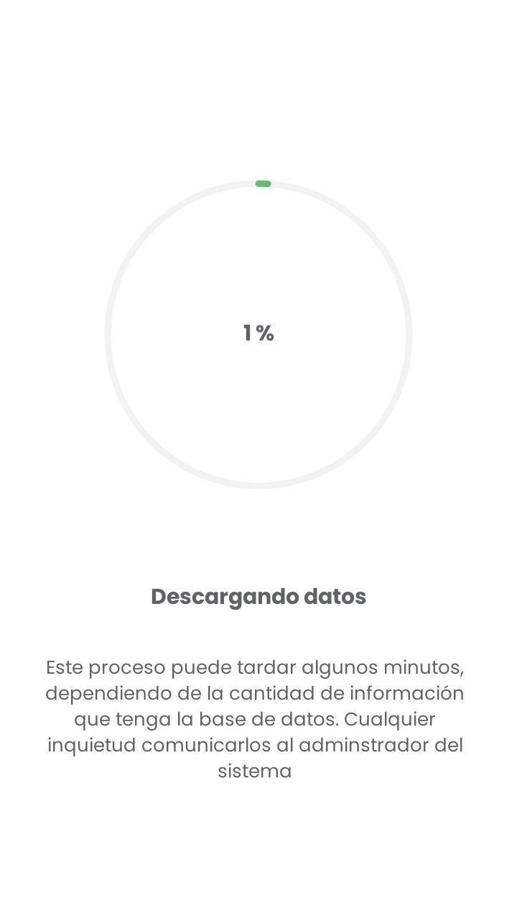 Imagen 4. AMovil - Descarga de datos
Finalizado el proceso de descarga, los dashboards se actualizan automáticamente:
 Imagen 5. AMovil - Actualización de datos
Imagen 5. AMovil - Actualización de datos
De la imagen anterior se visualiza el dashboard seleccionado de Solicitudes Estados de solicitudes , para visualizar el dashboard de Órdenes se debe dar un toque sobre el botón Estados de las ordenes.
66: indica el total de las SS o OT según el gráfico.
71 : indica el total de registros en la base de datos o un subgrupo de datos en un módulo.
: Inicia el proceso de sincronización del aplicativo con AM.
Nota: Cualquier actividad dentro del aplicativo supone una cantidad de trabajo, por lo que hasta que no se sincronice nuevamente, AMovil no permite hacer descarga de datos.
Al sincronizar, aparece un mensaje de advertencia:
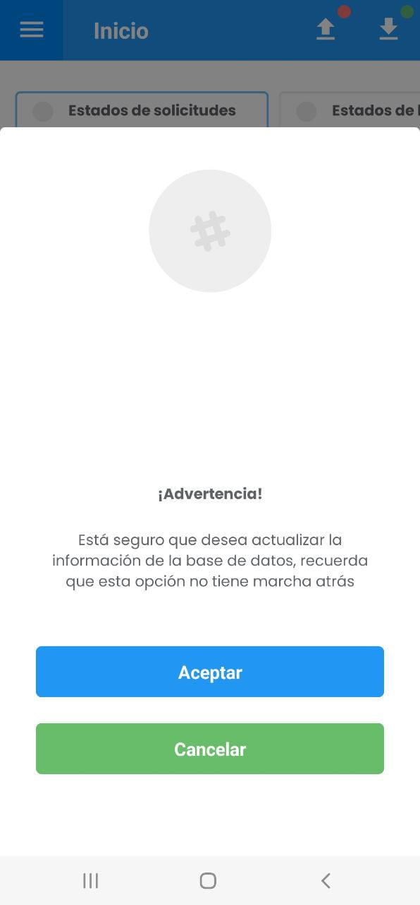 Imagen 6. AMovil - Advertencia Sincronizar datos
Para continuar dar un toque en Aceptar. Mostrando el progreso de sincronización:
.
 Imagen 7. AMovil - Proceso Sincronizar
Imagen 7. AMovil - Proceso Sincronizar
Una vez complete el proceso, puede cerrar sesión en la aplicación.
: ingresa al menú principal de la aplicación, como se muestra a continuación:
 Imagen 8. AMovil - Ir a Menú
Imagen 8. AMovil - Ir a Menú
A continuación se describen los botones del menú de inicio:
Inicio: Hace un direccionamiento a la página inicio donde se visualizan los bashboards de Solicitudes y Órdenes de Trabajo.
Activos : Ingresa al módulo de Activos.
Almacén : Permite ingresar al módulo de Materiales/Repuestos.
Solicitudes : Ingresa al módulo de Solicitudes de Servicio
Órdenes : Ingresa al módulo de Órdenes de Trabajo.
- Algunos comandos a tener en cuenta son:
: Es el ícono del subgrupo el cual permite filtrar o preseleccionar información acorde a un conjunto de criterios.
<span class=”iconify icon cl-white bg-blue” data-icon=mdi-dots-vertical></span></a> : abre un conjunto de opciones según el módulo o submódulo.
Estas opciones son:
: En el detalle de una SS u OT indica ingresar o modificar los tiempos de ejecución.
: Permite ingresar los comentarios de ejecución en una SS ou OT.
: Permite agregar la Multimedia al registro en cuestión.
: Permite hacer un cambio de estado en la SS/OT.
: Ingresa al formulario de evaluación del servicio de la SS/OT.
: Cierra la ventana del menú de opciones.
: Permite hacer un ingreso o registro de la firma masiva tanto del Responsable ejecutor como de la persona quien recibe en una SS ou OT.
Activos
Para acceder al Submenú de Activos se debe dar un toque sobre el botón Activos. El listado se muestra completo dependiendo de los permisos que tenga el usuario.
Al ingresar al módulo de Activos aparecen las siguientes opciones:
 Imagen 9. AMovil - Submenú de Activos
Imagen 9. AMovil - Submenú de Activos
Consultar Activos
Para hacer consulta de algún registro, dar un toque en el botón Consultar Activos el cual muestra el listado de todos los Activos. Cada registro se distingue en una tarjeta azul. Si algún registro tiene un indicador de color naranja significa que el Activo posee registros Multimedia.
En la parte superior derecha se visualiza el número total de Activos registrados en la base de datos 556:
 Imagen 10. AMovil - Ir a Detalle Activos
Imagen 10. AMovil - Ir a Detalle Activos
Para visualizar la ficha técnica del Activo, dar un toque sobre el botón Detalle:
 Imagen 11. AMovil - Ficha Técnica Activos
Imagen 11. AMovil - Ficha Técnica Activos
Para guardar un cambio sobre la ficha técnica dar un toque en Actualizar.
El aplicativo confirma que se ha actualizado el registro, para continuar dar un toque en Aceptar como se muestra a continuación:
 Imagen 12. AMovil - Mensaje Alerta Actualizar Activos
Imagen 12. AMovil - Mensaje Alerta Actualizar Activos
Multimedia en Activos
Para ingresar a Multimedia de Activos, ingrese al Detalle del registro en cuestión; nótese que en la parte superior derecha se encuentra el siguiente ícono <span class=”iconify icon cl-white bg-blue” data-icon=mdi-dots-vertical></span></a>, el cual muestra las siguientes dos opciones:
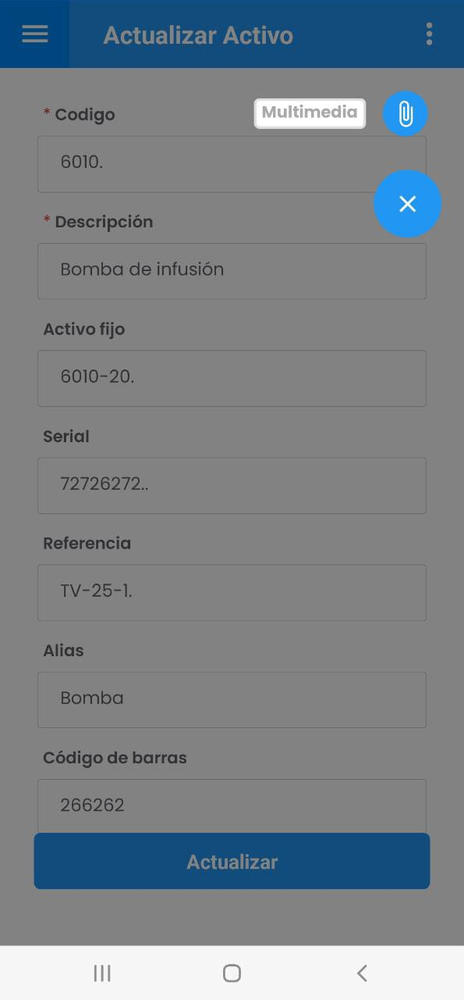 Imagen 13. AMovil - Ir a Multimedia
Para añadir multimedia o descargar los archivos existentes dar un toque en . Éste muestra la información general del Activo y tres carpetas disponibles:
Como se muestra en la siguiente imagen:
 Imagen 14. AMovil - Multimedia
Imagen 14. AMovil - Multimedia
A continuación se ilustra un ejemplo para subir Documentos, el cual es el mismo para Imágenes o Videos:
Para agregar o consultar documentos dar un toque en la respectiva carpeta Documentos.
En caso caso de tener documentos añadidos desde AM, es posible visualizarlos a través del botón </a>.
 Imagen 15. AMovil - Guardar Multimedia
Imagen 15. AMovil - Guardar Multimedia
Para subir un nuevo archivo, continúe dando un toque sobre Subir archivo, éste abre el explorador de archivos de su dispositivo móvil. Una vez seleccione el archivo, se visualiza el nombre del documento debajo del botón Guardar, como se indica en la siguiente imagen:
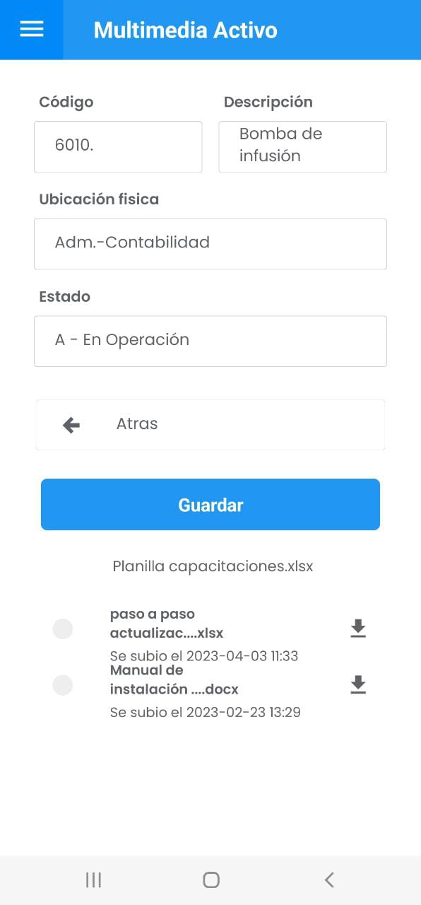 Imagen 16. AMovil - Guardar Multimedia
Finalice dando un toque en el botón Guardar. Cuando se cargue el archivo, el aplicativo muestra un mensaje de guardado exitoso, así:
 Imagen 17. AMovil - Mensaje Alerta Guardar Multimedia
Imagen 17. AMovil - Mensaje Alerta Guardar Multimedia
Los archivos añadidos se guardan en el orden del mas reciente al mas antiguo como se indica en la siguiente imagen:
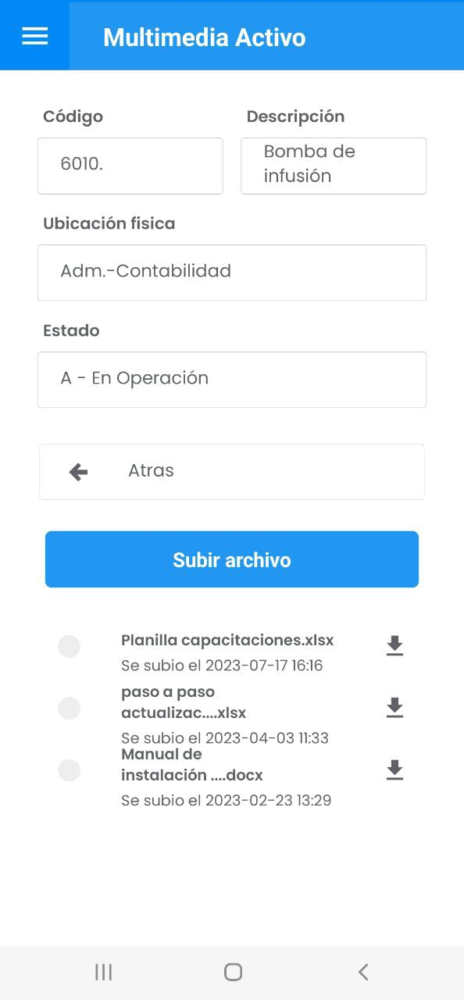 Imagen 17. AMovil - Visualización Multimedia
Subgrupo Activos
Se usa para realizar búsquedas de Activos que cumplen con un conjunto de filtros o criterios.
Para ingresar a esta opción se debe dar un toque al icono de Subgrupo ubicado en la parte inferior derecha de la pantalla, como se indica a continuación:
 Imagen 18. AMovil - Ir a Subgrupo
Imagen 18. AMovil - Ir a Subgrupo
Esto lleva a la siguiente ventana, como se indica a continuación:
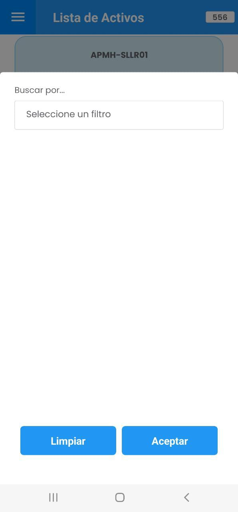 Imagen 19. AMovil - Seleccionar un filtro Subgrupo
Se debe dar un toque sobre el botón </span>Seleccione un filtro para visualizar los siguientes criterios de búsqueda:
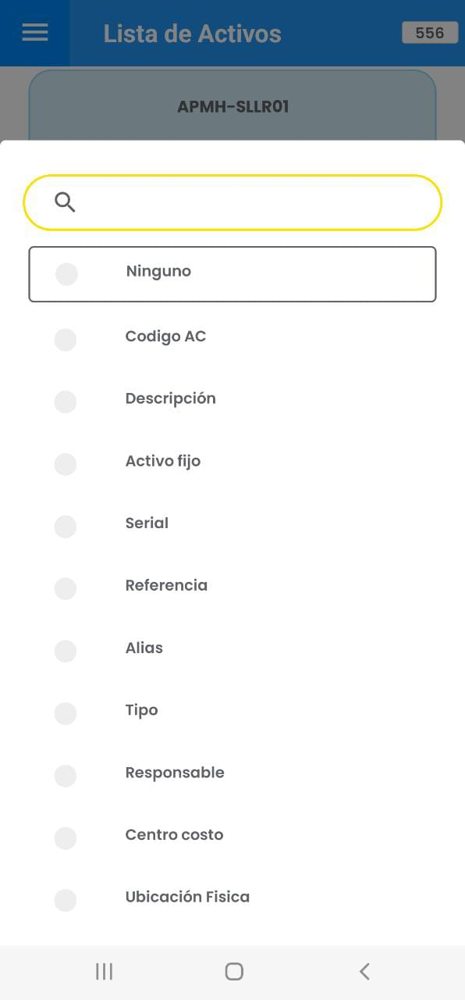 Imagen 20. AMovil - Subgrupo Criterios de Búsqueda
- Código AC
- Descripción
- Activo Fijo
- Serial
- Referencia
- Alias
- Tipo
- Responsable
- Centro de Costo
- Ubicación Física
De la imagen anterior, los botones ubicados en la parte inferior Limpiar y Aceptar son para limpiar el campo y hacer una nueva búsqueda.
A continuaciónn se muestra un ejemplo con el criterio Código AC:
Una vez que se haya elegido el criterio de búsqueda, se muestran los siguientes campos a diligenciar:
 Imagen 21. AMovil - Subgrupo Código AC
Imagen 21. AMovil - Subgrupo Código AC
Finalice dando un toque en Aceptar una vez que haya ingresado información al campo, a continuación se muestra el resultado de la búsqueda para el código COA. El botón 11 ubicado en la parte superior derecha de la ventana es la cantidad de resultados obtenidos:
 Imagen 22. AMovil - Subgrupo Resultado
Imagen 22. AMovil - Subgrupo Resultado
El Subgrupo se conserva hasta que el usuario reestablezca los valores por defecto, para reestablecerlo o para hacer otras búsquedas dar un toque nuevamente en el bóton en el cual se muestran las últimas búsquedas realizadas.
 Imagen 23. AMovil - Subgrupo Búsquedas recientes
Imagen 23. AMovil - Subgrupo Búsquedas recientes
Para eliminar el historial completo de búsquedas dar un toque en el botón Limpiar y luego en Aceptar para volver a los valores por defecto o puede removerlos uno por uno a través del botón <span class=”iconify icon cl-red bg-white” data-icon=mdi-delete-outline></span></a>.
Crear un Activo
AMovil permite crear un registro de Activo, siempre que el usuario logueado cuente con los permisos desde AM para ello.
Para Crear un Activo dar un toque en el botón del submenu de Activos Crear Activo , el cual abre el siguiente formulario:
 Imagen 24. AMovil - Crear Activo Formulario
Imagen 24. AMovil - Crear Activo Formulario
 Imagen 25. AMovil - Crear Activo Formulario
Imagen 25. AMovil - Crear Activo Formulario
Los campos con un asterisco (*) al inicio, indican que son campos obligantes. A continuación se da una breve explicación de los campos:
Código: En este campo se registra el código del Activo, correspondiente al código de Mantenimiento, de acuerdo a la estructuración organizacional.
Descripción: Se utiliza para el nombre del Activo.
Activo fijo: Es el Código Contable del Activo, según Contabilidad.
Serial: Este campo se utiliza para registrar el número de serie que identifica individualmente a un Activo según el fabricante.
Referencia: Conocido en AM como la refeencia externa del Proveedor. Se indica el código con el cual el Proveedor identifica el Activo.
Alias: Este campo es el especial para registrar un nombre especial. Igualmente se puede utilizar para registrar códigos antiguos con que se definían este Activo antes de la nueva codificación
Código de barras: Este campo pertenece al Código de Barras Interno del Activo, en caso que exista alguno dentro de la organización.
Marca: Este campo se utiliza para diligenciar la Marca que identifica el Activo.
Modelo: Este campo se utiliza para diligenciar el Modelo que identifica un Activo/Equipo según el fabricante
Tipo: Es una característica particular del un Activo según su uso o el fabricante.
Responsable: Persona propia de la organización encargada de la operación o funcionamiento del Activo. En este campo se traen automáticamente los diferentes Terceros asignados como Responsable Interno/Empleado y Responsable Externo/Contratista.
Centro de Costo: En este campo se registra el Centro de Costo al que está asociado el Activo.
Ubicación física: En este campo se traen automáticamente las Ubicaciones Físicas definidas en la infraestructura, para definir la ubicación geográfica del Activo en la planta.
Estado: El campo estado se utiliza para definir si el Activo actual se encuentra Activo (Operativo) o Inactivo (No operativo o dado de baja temporal o totalmente).
Para insertar el registro dar un clic en el botón Guardar .
El aplicativo muestra un mensaje alerta confirmado el ingreso del registro, como se muestra a continuación:
 Imagen 26. AMovil - Crear Activo Mensaje Aviso
Imagen 26. AMovil - Crear Activo Mensaje Aviso
Actualizar Contadores
Para actualizar contadores se debe dar un toque en el submmenú de Activos, y dar un toque en el botón Actualizar contadores .
Cabe destacar que la configuración de los mismos se hace inicialmente desde AM.
A continuación se muestra el listado de los Activos que tienen asociado un contador 26 :
 Imagen 27. AMovil - Ir a Actualizar Contadores
Imagen 27. AMovil - Ir a Actualizar Contadores
De la imagen anterior se indica lo siguiente:
Los Activos sombreados de color azul son Activos definidos como “Padres” o son unidades funcionales, mientras que los sombreados en amarillo son los que se definieron como “Hijos” o componentes del Activo Padre pero que no poseen el mismo valor o contador que su Activo Padre. Los Activos sombreados en gris indican que son “Hijos” y además, poseen la característica de tener el mismo valor y contador que su Activo Padre.
En esta sección también es posible hacer un subgrupo para actualizar el contador de un grupo de Activos , a continuación se muestra un ejemplo:
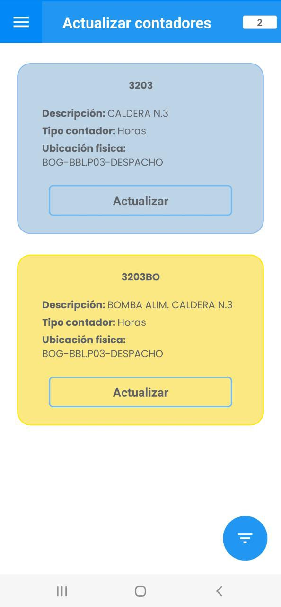 Imagen 28. AMovil - Actualizar Contadores
En la imagen anterior, se visualiza un Activo padre y un Activo hijo que no posee el mismo valor de contador; al presentarse esta diferencia se debe Actualizar el valor de cada uno.
En este ejemplo se muestra el detalle del Activo Padre:
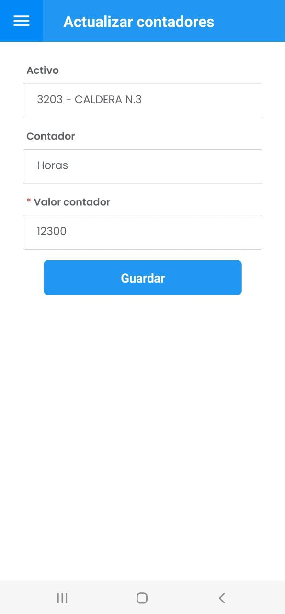 Imagen 29. AMovil - Detalle Actualizar Contadores
Se digita el nuevo valor de medición del contador y finalmente se da un toque en el botón Guardar , el aplicativo muestra un mensaje alerta confirmando los cambios realizados.
 Imagen 30. AMovil - Mensaje Alerta Actualizar Contadores
Imagen 30. AMovil - Mensaje Alerta Actualizar Contadores
Cuando se detecta un valor inferior al valor actual del contador del Activo, el aplicativo muestra un mensaje alerta y se deberá revisar nuevamente el valor ingresado:
 Imagen 31. AMovil - Mensaje Alerta Actualizar Contadores
Imagen 31. AMovil - Mensaje Alerta Actualizar Contadores
Nota: los Activos hijos sombreados en gris se actualizan automáticamente una vez se actualice el contador del Activo Padre.
Inventario Físico
Para llevar a cabo esta transacción se debe dar un toque sobre el botón Inventario físico ubicado en el submenú de Activos, el cual muestra el siguiente submenú:
 Imagen 32. AMovil - Ir a Inventario físico
Imagen 32. AMovil - Ir a Inventario físico
Cada una de las opciones anteriores, son criterios por los cuales es posible ejecutar la transacción. Siendo los mas comunes Centro de Costo y Ubicación Física. El objetivo es hacer el conteo de los Activos inventariados y no inventariados.
El criterio Otro despliega un conjunto de otras opciones para realizar el inventario:
 Imagen 33. AMovil - Ir a Inventario físico Otro
Imagen 33. AMovil - Ir a Inventario físico Otro
 Imagen 34. AMovil - Ir a Inventario físico Otro
Imagen 34. AMovil - Ir a Inventario físico Otro
Al elegir una de las opciones mostradas anteriormente el aplicativo muestra un mensaje de advertencia, que consiste en recordar que cada uno de los Activos debe tener un código de barras o un código QR o bien un código alfanumérico.
 Imagen 35. AMovil - Ir a Inventario físico Ubicación Física
Imagen 35. AMovil - Ir a Inventario físico Ubicación Física
Se ilustra un ejemplo usando el criterio Ubicación Física. Se muestran todas las ubicaciones de la base de datos:
 Imagen 36. AMovil - Inventario físico Ubicación Física
Imagen 36. AMovil - Inventario físico Ubicación Física
Sin embargo, para facilitar la búsqueda use el botón Buscar una Ubicación física y digite una parte del nombre de la ubicación física:
 Imagen 37. AMovil - Inventario físico Buscar Ubicación Física
Imagen 37. AMovil - Inventario físico Buscar Ubicación Física
Seleccione la ubicación física de interés, a continuación se visualiza la pantalla para comenzar el inventario:
 Imagen 38. AMovil - Inventario físico Buscar Iniciar Inventario
Imagen 38. AMovil - Inventario físico Buscar Iniciar Inventario
A continuación se indica el significado del color de los indicadores:
: Este indicador muestra el total de activos que hay en la ubicación seleccionada o asoacorde al criterio de selección.
: Este indicador muestra el total de activos que han sido encontrados en el transcurso del inventario físico.
: Este indicador muestra el total de activos que aún no han sido encontrados en el transcurso del inventario físico.
: Este indicador muestra el total de activos que han sido encontrados pero que no pertenecen a la ubicación seleccionada.
: Este indicador muestra el total de activos que no han sido registrados en el sistema.
Para comenzar dar un toque en el botón Iniciar inventario.
A continuación se ilustra un ejemplo con el criterio Ubicación Física:
 Imagen 39. AMovil - Inventario físico Detalle
Imagen 39. AMovil - Inventario físico Detalle
Si se da un toque sobre cualquiera de los indicadores de colores ubicados en la parte superior se muestra un mensaje corto que explica su función en la parte inferior derecha:
 Imagen 40. AMovil - Inventario físico Mensaje Indicador
Imagen 40. AMovil - Inventario físico Mensaje Indicador
El botón Agregar comentario permite ingresar un comentario antes, durante y después del inventario.
Para comenzar se sugiere escanear el código QR de los Activos, con el fin de agilizar el proceso . En caso de no contar éste, se encuentra la opción manual de ingresar el código alfanumérico del Activo que corresponde al código principal en AM.
Nota: Para que la lectura del código QR sea satisfactoria; en AM los Activos deben tenerlo registrado en el campo Código de Barras Interno.
Una vez se haga lectura del código QR, se muestra un mensaje en la parte inferior:
 Imagen 41. AMovil - Inventario físico Lectura Código QR
Imagen 41. AMovil - Inventario físico Lectura Código QR
Nota: El inventario puede continuar su curso siempre y cuando el usuario no escoja la opción Finalizar inventario
Para continuar el inventario dar un toque en Continuar inventario, como se muestra a continuación:
 Imagen 42. AMovil - Inventario físico Continuar Inventario
Imagen 42. AMovil - Inventario físico Continuar Inventario
El aplicativo actualiza lo que lleva del proceso:
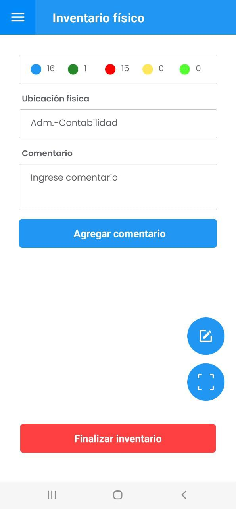 Imagen 43. AMovil - Inventario físico Continuar Inventario
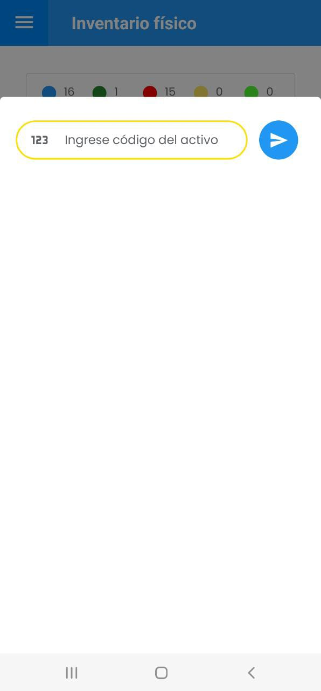 Imagen 44. AMovil - Inventari o físico Continuar Inventario
 Imagen 45. AMovil - Inventario físico Continuar Inventario
Imagen 45. AMovil - Inventario físico Continuar Inventario
Se muestra un mensaje exitoso en la parte inferior confirmando el registro del Activo:
 Imagen 46. AMovil - Inventario físico Continuar Inventario
Imagen 46. AMovil - Inventario físico Continuar Inventario
Al dar un toque en el botón Finalizar inventario se muestra el resultado con la explicación de los indicadores y el detalle de cada Activo con su respectivo indicador como se muestra en la siguiente imagen:
 Imagen 47. AMovil - Resumen Inventario
Imagen 47. AMovil - Resumen Inventario
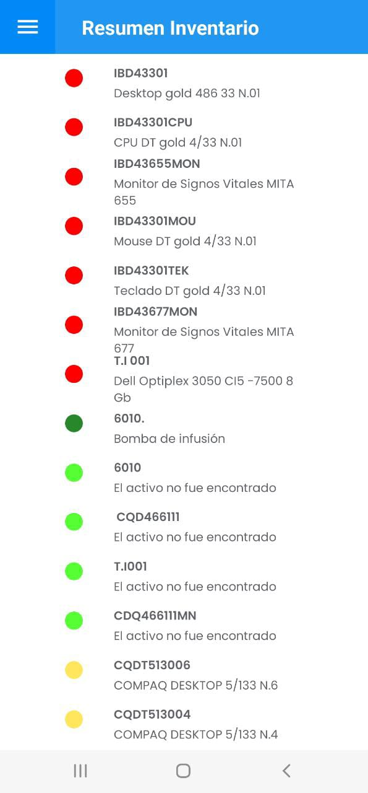 Imagen 48. AMovil - Resumen Inventario
Almacén
Para acceder al Almacén se debe dar un toque sobre el botón Almacen :
 Imagen 49. AMovil - Ir a Almacén
Imagen 49. AMovil - Ir a Almacén
Se muestran los Almacenes definidos en AM, éstos se listan acorde a los permisos otorgados al usuario logueado:
 Imagen 50. AMovil - Almacenes
Imagen 50. AMovil - Almacenes
Para ingresar a un Almacén se debe seleccionarlo con un toque, cada Almacén contiene un submenú que permite hacer consulta, creación de Materiales/Repuestos y hacer reservas acorde a los permisos que tenga el usuario.
 Imagen 51. AMovil - Almacén Submenú
Imagen 51. AMovil - Almacén Submenú
Consultar Repuestos
Para hacer consulta de los Materiales/Repuestos se da un toque sobre el botón Consultar Repuestos, a continuación se muestra el listado de los materiales/repuestos disponibles para el almacén seleccionado y en la parte superior se muestra el nombre del Almacén donde se realiza la consulta:
 Imagen 52. AMovil - Almacén Consulta Repuestos
Imagen 52. AMovil - Almacén Consulta Repuestos
Para ingresar al detalle del registro se da un toque sobre el botón Detalle el cual muestra la ficha técnica del Material/Repuesto:
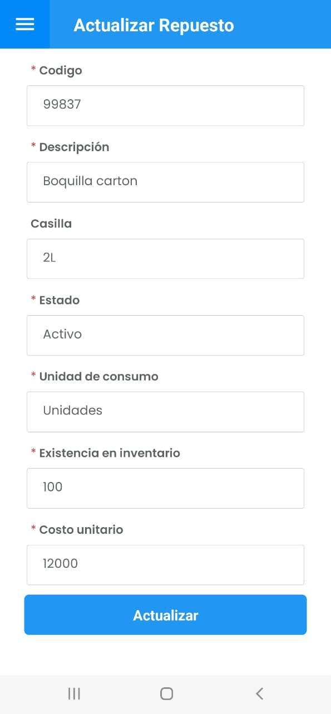 Imagen 53. AMovil - Ficha Técnica Repuesto
Para guardar un cambio sobre la ficha técnica dar un toque en Actualizar. Se muestra un mensaje alerta indicando que se ha actualizado el registro y para continuar dar un toque en Aceptar como se muestra a continuación:
 Imagen 54. AMovil - Mensaje Alerta Actualizar Repuestos
Imagen 54. AMovil - Mensaje Alerta Actualizar Repuestos
Subgrupo Repuestos
El Subgrupo de Materiales/Repuestos permite hacer búsquedas rápidas de registros que cumplan con uno o un conjunto de criterios.
Para ingresar a esta opción se debe dar un toque sobre el icono de Subgrupo ubicado en la parte inferior derecha de la pantalla, como se indica a continuación:
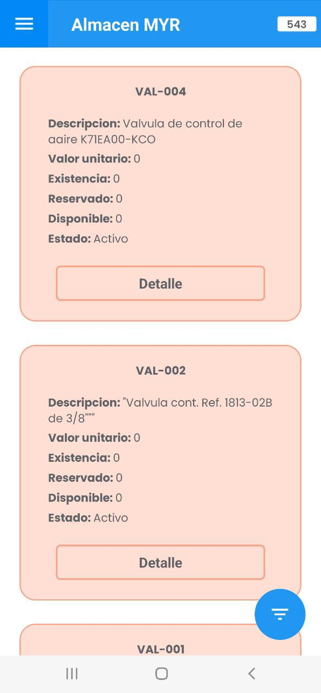 Imagen 55. AMovil - Almacén Ir a Subgrupo
El subgrupo abre la siguiente ventana:
 Imagen 56. AMovil - Almacén Seleccionar un filtro Subgrupo
Imagen 56. AMovil - Almacén Seleccionar un filtro Subgrupo
Se debe dar un toque sobre el botón </span>Seleccione un filtro para visualizar los siguientes criterios de búsqueda y seleccionar un criterio:
 Imagen 57. AMovil - Almacén Subgrupo Criterios de Búsqueda
Imagen 57. AMovil - Almacén Subgrupo Criterios de Búsqueda
- Código RP
- Descripción
- Estado
Una vez que se elija el criterio de búsqueda, se muestran los siguientes campos a diligenciar.
A continuaciónn se muestra un ejemplo con el criterio Código RP:
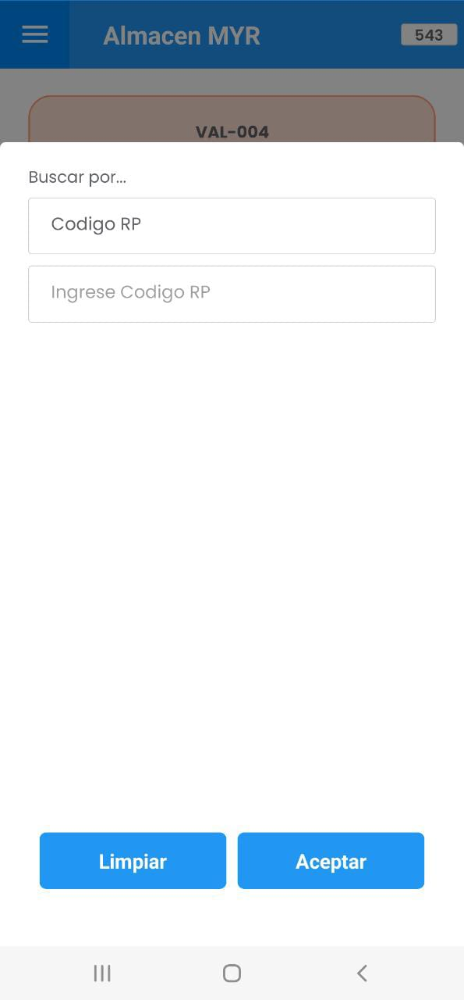 Imagen 58. AMovil - Almacén Subgrupo Criterios de Búsqueda
De la imagen anterior, los botones ubicados en la parte inferior Limpiar y Aceptar son para limpiar el campo y hacer una nueva búsqueda.
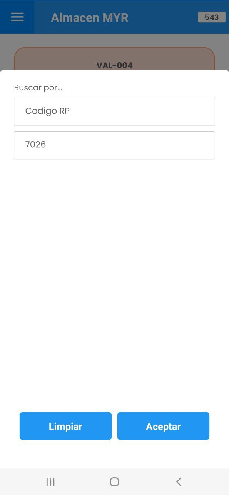 Imagen 59. AMovil - Almacén Subgrupo Código RP
Una vez introduzca los datos, finalice con el botón Aceptar . A continuación se muestra el resultado de la búsqueda 1:
 Imagen 60. AMovil - Almacén Subgrupo Resultado
Imagen 60. AMovil - Almacén Subgrupo Resultado
El Subgrupo permanece hasta que el usuario reestablezca los valores por defecto. Para hacer otras búsquedas dar un toque nuevamente en el ícono subgrupo donde se muestran las búsquedas anteriores:
 Imagen 61. AMovil - Almacén Subgrupo Búsquedas recientes
Imagen 61. AMovil - Almacén Subgrupo Búsquedas recientes
Para eliminar el historial completo de búsquedas dar un toque en el botón Limpiar y luego en Aceptar para volver a los valores por defecto.
Crear un Repuesto
AMovil permite crear un registro de Material/Repuesto siempre que el usuario logueado cuente con los permisos desde AM.
Para crear un Material/Repuesto dar un toque en el botón del submenú de Activos Crear Repuesto el cual abre el siguiente formulario:
Los campos con asteriscos en rojo (*) son obligatorios:
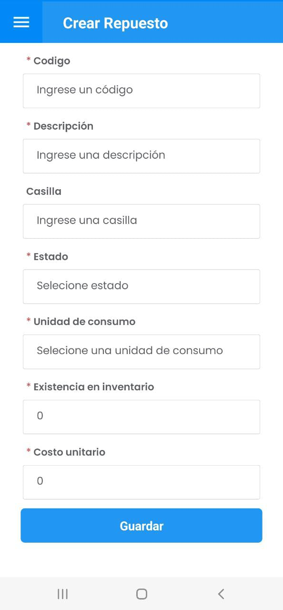 Imagen 62. AMovil - Almacén Crear Repuesto Formulario
Código: En este campo se registra el código del Material/Repuesto, de acuerdo a la política de codificación que se haya definido.
Descripción: Se registra la descripción del Material/Repuesto en lenguaje natural.
Casilla: Es el campo en el que se establece la ubicación física del Material/Repuesto dentro del Almacén. Este campo permite cualquier nomenclatura de organización. Ejemplo. E21B (7,12) significaría Estante 21, lado B, posición matricial fila 7 columna 12.
Estado: En este campo de opciones seleccionables es posible registrar el estado del Material/Repuesto: Activo, EOI (Excedente Obsoleto o Inservible), Vencido y Otro.
Unidad de consumo: Es la unidad mediante la cual se le solicita al Almacén o mediante la cual el Almacén despacha un determinado artículo. Ej. Galones o Unidades.
Existencia en inventario: Registra la cantidad en existencia en el Almacén del Material/Repuesto seleccionado. Este campo puede ser actualizado manualmente o en forma automática a través del módulo de Kárdex en AM. Es un permiso que se otorga desde AM para un usuario en AMovil.
Costo unitario: Es un valor que puede ser actualizado manualmente por alguien que tiene los permisos para hacerlo. Puede también actualizarse automáticamente por el sistema según el sistema de costeo definido para el almacén, a través del Kárdex en AM.
Una vez que se diligencien los campos, finalizar dando un clic en el botón Guardar :
 Imagen 63. AMovil - Almacén Crear Repuesto Formulario Mensaje Alerta
Imagen 63. AMovil - Almacén Crear Repuesto Formulario Mensaje Alerta
Reservar Repuesto
Para reservar un Material/Repuesto se da un toque sobre el submenú de Almacén en la opción Reservar Repuesto .
A continuación se muestra el formulario de Reserva y se da una breve explicación de cada campo:
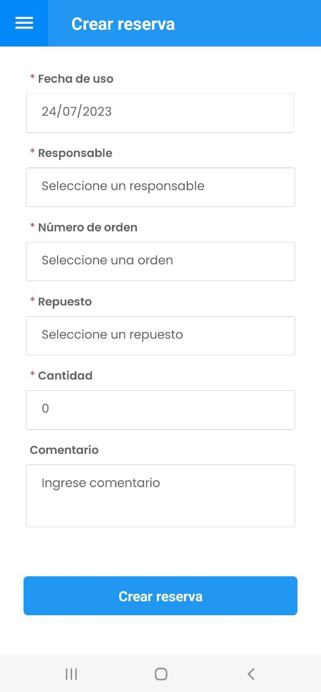 Imagen 64. AMovil - Almacén Crear Repuesto Formulario Mensaje Alerta
Fecha de uso: Es la fecha en la que se tiene planeado utilizar el Material/Repuesto. De acuerdo con esta fecha, la persona encargada del Almacén debe mantener las unidades reservadas, disponibles sólo para quién registró la reserva.
Responsable: Es la persona que registra la Reserva de las unidades del Material/Repuesto seleccionado.
Número de orden: Exige un consecutivo de OT para hacer la reserva y así el Almacenista pueda ejecutar la transacción desde el módulo de Kardex.
Repuesto: Es el Material/Repuesto objeto de la reserva.
Cantidad: Es el número de unidades del Material/Repuesto que se desea reservar.
Comentario: Se pueden agregar observaciones o aclaraciones referentes a la reserva.
Una vez llenados los campos se da un toque sobre el botón Crear reserva se mostrando el siguiente mensaje:
 Imagen 65. AMovil - Almacén Crear Repuesto Formulario Mensaje Alerta
Imagen 65. AMovil - Almacén Crear Repuesto Formulario Mensaje Alerta
Nota: cuando ya existe la reserva para una misma OT se muestra un mensaje que rechaza la reserva.
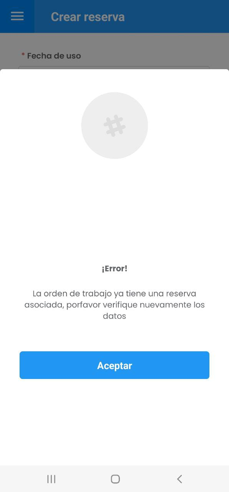 Imagen 66. AMovil - Almacén Crear Repuesto Formulario Mensaje Alerta
Solicitudes
Para ir a Solicitudes de Servicio dar un toque sobre el botón Solicitudes en el menú principal:
 Imagen 67. AMovil - Ir a Solicitudes
Imagen 67. AMovil - Ir a Solicitudes
En el siguiente submenú se muestran las siguientes opciones según los permisos de usuario:
 Imagen 68. AMovil - Solicitudes Submenú
Imagen 68. AMovil - Solicitudes Submenú
Consultar Solicitudes
Para consulta y seguimiento de las Solicitudes de Servicio dirigirse al botón Consultar Solicitudes, el cual conlleva al total de las Solicitudes:
 Imagen 69. AMovil - Solicitudes
Imagen 69. AMovil - Solicitudes
Para ir al detalle del registro dar un toque en el botón Detalle como se muestra a continuación:
 Imagen 70. AMovil - Solicitudes Detalle
Imagen 70. AMovil - Solicitudes Detalle
 Imagen 71. AMovil - Solicitudes Detalle
Imagen 71. AMovil - Solicitudes Detalle
Para guardar los cambios en alguno de los campos de la Solicitud dar un toque en el botón Actualizar. Se muestra un mensaje alerta confirmando los cambios:
 Imagen 72. AMovil - Solicitudes Actualizar Detalle
Imagen 72. AMovil - Solicitudes Actualizar Detalle
Para continuar dar un toque en Aceptar.
Para ingresar al submenú del Detalle de la Solicitud diríjase al botón ubicado en la parte superior derecha <span class=”iconify icon cl-white bg-blue” data-icon=mdi-dots-vertical></span></a>. Se muestran las siguientes opciones relacionadas a la gestión y cierre de Solicitudes:
 Imagen 73. AMovil - Ir a Submenú Gestión/Cierre Solicitudes
Imagen 73. AMovil - Ir a Submenú Gestión/Cierre Solicitudes
Actualizar tiempos
Para ingresar los tiempos de ejecución de la Solicitud dirigirse al botón <span class=”iconify icon cl-white bg-blue” data-icon=mdi-dots-vertical></span></a> y luego ingresar a . Se muestra el detalle de la Solicitud en cuestión, aquellas con estado En análisis deben tener previamente la fecha y hora de Atención, se muestra un ejemplo a continuación:
 Imagen 74. AMovil - Solicitudes Actualizar tiempos
Imagen 74. AMovil - Solicitudes Actualizar tiempos
En el detalle de la Solicitud dar un toque en el botón Ingresar FF/HH de atención para ingresar automáticamente la fecha y hora:
 Imagen 75. AMovil - Solicitudes FFHH Atención
Imagen 75. AMovil - Solicitudes FFHH Atención
Luego de registrar la FF/HH atención, se habilitan las opciones:
Nota: para ingresar los tiempos en una Solicitud sólo se puede escoger una de los opciones anteriores.
La primera consiste en ingresar las fechas de ejecución de forma manual en cada campo y hacer correcciones sobre el tiempo de duración como se muestra a continuación:
 Imagen 76. AMovil - Solicitudes Registro Manual de Tiempos
Imagen 76. AMovil - Solicitudes Registro Manual de Tiempos
Para asentar los cambios dar un toque en el botón Guardar donde se confirma la actualización y para continuar dar un toque en Aceptar:
 Imagen 77. AMovil - Solicitudes Mensaje Alerta
Imagen 77. AMovil - Solicitudes Mensaje Alerta
La segunda, es para ingresar automáticamente los tiempos:
 Imagen 78. AMovil - Solicitudes Ingreso Automático de Tiempos
Imagen 78. AMovil - Solicitudes Ingreso Automático de Tiempos
Para dar inicio dar un toque en el botón
Iniciar, esto hará que la FF/Inicio (Fecha Inicio de Trabajos) se ingrese automáticamente. En la siguiente imagen se muestra el ingreso automático y los botones Pausar para el manejo del tiempo de duración y Finalizar para ingresar la FF/Fin (Fecha Fin de Trabajos).
 Imagen 79. AMovil - Solicitudes Ingreso Automático de Tiempos
Imagen 79. AMovil - Solicitudes Ingreso Automático de Tiempos
En caso de Pausar la ejecución de trabajos se prosigue con el botón Continuar y al Finalizar la ejecución, se muestra el resumen de tiempos:
 Imagen 80. AMovil - Solicitudes Ingreso Automático de Tiempos
Imagen 80. AMovil - Solicitudes Ingreso Automático de Tiempos
 Imagen 81. AMovil - Solicitudes Ingreso Automático de Tiempos
Imagen 81. AMovil - Solicitudes Ingreso Automático de Tiempos
Comentarios
Para ingresar los detalles de la ejecución o comentarios de la Solicitud dirigirse al botón <span class=”iconify icon cl-white bg-blue” data-icon=mdi-dots-vertical></span></a> y luego a como se indica a continuación:
 Imagen 82. AMovil - Solicitudes Ir a Comentarios
Imagen 82. AMovil - Solicitudes Ir a Comentarios
A continuación se muestra el resumen de la Solicitud, para guardar el comentario dar un toque en el botón Guardar . Se muestra un mensaje alerta y para finalizar dar un toque en Aceptar :
 Imagen 83. AMovil - Solicitudes Ingresar Comentarios
Imagen 83. AMovil - Solicitudes Ingresar Comentarios
 Imagen 84. AMovil - Solicitudes Mensaje Alerta Comentarios
Imagen 84. AMovil - Solicitudes Mensaje Alerta Comentarios
Una vez que se guarden los comentarios, se muestra el detalle en la parte inferior el usuario que registró el comentario así:
 Imagen 85. AMovil - Solicitudes Detalle Comentarios
Imagen 85. AMovil - Solicitudes Detalle Comentarios
Multimedia
Para ingresar documentos, imágenes o videos a la Solicitud dirigirse al botón <span class=”iconify icon cl-white bg-blue” data-icon=mdi-dots-vertical></span></a> y luego ir a como se indica a continuación:
 Imagen 86. AMovil - Solicitudes Ir a Multimedia
Imagen 86. AMovil - Solicitudes Ir a Multimedia
A continuación se muestra un resumen de la Solicitud con las siguientes tres carpetas:
 Imagen 87. AMovil - Solicitudes Multimedia
Imagen 87. AMovil - Solicitudes Multimedia
Cada una de las carpetas indican los tipos archivos permitidos en cada una. Una vez ingresada a la carpeta, es posible devolverse con el botón Atras, para cargar el archivo dar un toque en el botón Subir archivo , esto abre el explorador de archivos del teléfono móvil o estación donde se ejecute el proceso. Se ilustra un ejemplo añadiendo imágenes correspondientes a la solicitud:
 Imagen 88. AMovil - Solicitudes Multimedia
Imagen 88. AMovil - Solicitudes Multimedia
Una vez se elija el archivo, se muestra en la parte inferior su nombre, como se muestra a continuación:
 Imagen 89. AMovil - Solicitudes Multimedia
Imagen 89. AMovil - Solicitudes Multimedia
Para continuar, dar un toque en el botón Guardar . Se muestra el siguiente mensaje alerta:
 Imagen 90. AMovil - Solicitudes Mensaje Alerta Multimedia
Imagen 90. AMovil - Solicitudes Mensaje Alerta Multimedia
Para finalizar dar un toque en Aceptar . Ir a Atras para continuar agregando multimedia.
Una vez el registro tenga multimedia, se agrega un indicador de color naranja , así:
 Imagen 91. AMovil - Solicitudes Indicador Multimedia
Imagen 91. AMovil - Solicitudes Indicador Multimedia
Cerrar Solicitud
Para cerrar la Solicitud de Servicio se requiere que tenga los tiempos de ejecución previamente diligenciados para cambiar el estado a Cerrada Parcial o Cerrada Ejecutada, luego, ingresar la Causa de Falla para TM (Tipo de Mantenimiento) Correctivo y luego de guardar los cambios, finalizar ingresando la firma del Responsable.
Cuando se tengan los tiempos diligenciados, diríjase al botón <span class=”iconify icon cl-white bg-blue” data-icon=mdi-dots-vertical></span></a> y luego a Cerrar Solicitud :
 Imagen 92. AMovil - Solicitudes Ir a Cerrar Solicitud
Imagen 92. AMovil - Solicitudes Ir a Cerrar Solicitud
A continuación se muestra el detalle del Cierre de Solicitud. Además, es posible que el técnico ejecutor indique si el Activo se entrega limpio.
 Imagen 93. AMovil - Solicitudes Detalle Cierre
Imagen 93. AMovil - Solicitudes Detalle Cierre
 Imagen 94. AMovil - Solicitudes Detalle Cierre
Imagen 94. AMovil - Solicitudes Detalle Cierre
Para ingresar la firma, se requiere que la Solicitud de Servicio tenga el estado Cerrada Ejecutada ó Cerrada Parcial. Este estado depende de la parametrización del cierre desde AMovil desde AM.
 Imagen 95. AMovil - Solicitudes Cambiar Estado
Imagen 95. AMovil - Solicitudes Cambiar Estado
Continúe asignando una causa de falla si es el caso. Se muestran las opciones de Causa de Falla (Aplicable a Solicitudes Correctivas). Se despliegan las Causas de Falla según la respectiva tabla de Infraestructura en AM:
 Imagen 96. AMovil - Solicitudes Causa de Falla
Imagen 96. AMovil - Solicitudes Causa de Falla
Una vez diligencie el formulario del Cierre de Solicitud, debe Guardar los cambios.
Para continuar dar un toque en el botón Firma del encargado/Ejecutor. Continúe ingresando la firma en el siguiente espacio:
 Imagen 97. AMovil - Solicitudes Ingresar Firma
Imagen 97. AMovil - Solicitudes Ingresar Firma
Se puede rehacer la firma con el botón Limpiar o asentar la firma con el botón Guardar y también es posible Visualizar firma , como se muestra en el siguiente ejemplo:
 Imagen 98. AMovil - Solicitudes Visualizar firma
Imagen 98. AMovil - Solicitudes Visualizar firma
Una vez se guarde la firma, se muestra el siguiente mensaje alerta:
 Imagen 99. AMovil - Solicitudes Cierre Mensaje Alerta
Imagen 99. AMovil - Solicitudes Cierre Mensaje Alerta
Los registros que tengan la firma del Responsable Ejecutor se indican a través de un color gris , como se muestra en el siguiente ejemplo:
 Imagen 100. AMovil - Solicitudes Indicador Firma
Imagen 100. AMovil - Solicitudes Indicador Firma
Evaluación
Para evaluar el servicio al Responsable Ejecutor se debe ir al botón <span class=”iconify icon cl-white bg-blue” data-icon=mdi-dots-vertical></span></a> y luego a Evaluación
 Imagen 101. AMovil - Solicitudes Ir a Evaluación
Imagen 101. AMovil - Solicitudes Ir a Evaluación
A continuación marque su respuesta en cada pregunta, siendo:
- E: Excelente
- B: Bueno
- A: Aceptable
- D: Deficiente
- M: Malo
 Imagen 102. AMovil - Solicitudes Evaluación
Imagen 102. AMovil - Solicitudes Evaluación
Continúe con el botón Guardar . Luego de actualizarse se muestra el siguiente mensaje alerta:

Imagen 103. AMovil - Solicitudes Registro Evaluación
En la parte inferior se habilita el botón Firma de quien recibe/Evalúa con el fin de registrar la firma del Solicitante:

Imagen 104. AMovil - Solicitudes Ir a Firma Solicitante
Al ingresar a la opción se muestra una ventana detalle ingreso de la firma del Solicitante:
 Imagen 105. AMovil - Solicitudes Detalle Firma Solicitante
Imagen 105. AMovil - Solicitudes Detalle Firma Solicitante
Continúe ingresando registrando la firma, a continuación se muestra una ejemplo gráfico:
 Imagen 106. AMovil - Solicitudes Ejemplo Firma Solicitante
Imagen 106. AMovil - Solicitudes Ejemplo Firma Solicitante
Para guardar la firma, continúe con el botón Guardar . De lo contrario, puede rehacer la firma con el botón Limpiar .
Una vez se guarde la firma, el aplicativo muestra el siguiente mensaje alerta:
 Imagen 107. AMovil - Solicitudes Mensaje Alerta Firma Solicitante
Imagen 107. AMovil - Solicitudes Mensaje Alerta Firma Solicitante
Para verificar el registro de la firma, ingrese nuevamente en el botón Firma de quien recibe/Evalúa y en el detalle del ingreso de la firma continúe a la opción Visualizar Firma :
 Imagen 109. AMovil - Solicitudes Visualizar Firma Solicitante
Imagen 109. AMovil - Solicitudes Visualizar Firma Solicitante
También, es posible saber que un registro posee la firma del Solicitante, a través del indicador blanco así:
 Imagen 110. AMovil - Solicitudes Indicador Firma Solicitante
Imagen 110. AMovil - Solicitudes Indicador Firma Solicitante
Firma Masiva
Esta opción se sugiere cuando un técnico responsable requiere registrar la firma tanto de él como de la persona que recibe de forma masiva o para un subgrupo de Solicitudes.
Es de considerar que para ejecutar esta transacción las Solicitudes de Servicio requieren tener diligenciados los tiempos de ejecución y deben estar cerradas.
Desde AM se puede parametrizar el Permitir Firma de Recibido sin Evaluación en AMovil.
Es posible hacer el ingreso de la firma del Responsable Ejecutor Responsable y también de la persona o solicitante que recibe.
Para ello se sugiere usar la función Subgrupo. A continuación se muestra un ejemplo del paso a paso:
Una vez ingrese a la opción Consultar Solicitudes diríjase a la opción Subgrupo mostrado a continuación:
 _Imagen 111. AMovil - Consulta Solicitudes _
_Imagen 111. AMovil - Consulta Solicitudes _
Haga la búsqueda por medio de los siguientes filtros en la opción </span>Seleccione un filtro:
 Imagen 112. AMovil - Subgrupo Solicitudes
Imagen 112. AMovil - Subgrupo Solicitudes
Para el ejemplo se usa el filtro Responsable, esta opción lista todos los Responsables ejecutores de la tabla de Terceros en AM, además, puede facilitar la búsqueda con el botón Buscar un Responsable e introducir una parte del nombre, una vez lo seleccione se muestra el campo diligenciado, como se indica a continuación:
 Imagen 113. AMovil - Subgrupo Solicitudes
Imagen 113. AMovil - Subgrupo Solicitudes
Continúe con el botón Aceptar ubicado en la parte inferior.
Luego, visualice el resultado del Subgrupo en la parte superior con el botón 3:
 Imagen 114. AMovil - Subgrupo Solicitudes
Imagen 114. AMovil - Subgrupo Solicitudes
Diríjase al botón ubicado en la parte superior derecha <span class=”iconify icon cl-white bg-blue” data-icon=mdi-dots-vertical></span></a>:
 Imagen 115. AMovil - Ir a Firma Masiva
Imagen 115. AMovil - Ir a Firma Masiva
Seguidamente elija la opción Firma Masiva De Quien Recibe :
 Imagen 116. AMovil - Firma Masiva Recibido Satisfacción
Imagen 116. AMovil - Firma Masiva Recibido Satisfacción
Para ingresar la firma, primero ingrese el nombre de quien recibe o evalúa en el primer recuadro de la parte superior, continúe dibujando la firma en el siguiente recuadro. Puede rehacerla con el botón Limpiar o asentarla con el botón Guardar .
 Imagen 117. AMovil - Firma Masiva Recibido Satisfacción
Imagen 117. AMovil - Firma Masiva Recibido Satisfacción
Al guardar la firma se muestra un mensaje alerta exitoso de ingreso. Continúe dando un toque al botón Aceptar .
 Imagen 118. AMovil - Firma Masiva Recibido Satisfacción
Imagen 118. AMovil - Firma Masiva Recibido Satisfacción
Al finalizar los registros quedan con el indicador blanco:
 Imagen 119. AMovil - Firma Masiva Recibido Satisfacción
Imagen 119. AMovil - Firma Masiva Recibido Satisfacción
Diríjase al botón ubicado en la parte superior derecha <span class=”iconify icon cl-white bg-blue” data-icon=mdi-dots-vertical></span></a>:
Imagen 120. AMovil - Ir a Firma Encargado Solicitud
Seguidamente elija la opción Firma Masiva Del Técnico Responsable :
 Imagen 121. AMovil - Ir a Firma Encargado Solicitud
Imagen 121. AMovil - Ir a Firma Encargado Solicitud
Continúe dibujando la firma en el siguiente recuadro. Puede rehacerla con el botón Limpiar o asentarla con el botón Guardar .
 Imagen 122. AMovil - Firma Masiva Encargado Solicitud
Imagen 122. AMovil - Firma Masiva Encargado Solicitud
Al guardar la firma se muestra un mensaje alerta exitoso de ingreso. Continúe dando un toque al botón Aceptar .
 Imagen 123. AMovil - Firma Masiva Mensaje Alerta
Imagen 123. AMovil - Firma Masiva Mensaje Alerta
Al finalizar los registros quedan con el indicador gris :
 Imagen 124. AMovil - Firma Masiva Encargado Solicitud Indicador
Imagen 124. AMovil - Firma Masiva Encargado Solicitud Indicador
Crear Solicitud
Para crear un nuevo registro diríjase al botón Crear Solicitud , el cual conlleva al siguiente formulario:
 Imagen 125. AMovil - Submenú Ir a Crear Solicitud
Imagen 125. AMovil - Submenú Ir a Crear Solicitud
 Imagen 126. AMovil - Formulario Solicitud
Imagen 126. AMovil - Formulario Solicitud
 Imagen 127. AMovil - Formulario Crear Solicitud
Imagen 127. AMovil - Formulario Crear Solicitud
Todos los campos son obligatorios, se debe contar con los permisos para visualizar la Órden creada.
A continuación se da una breve explicación de cada campo:
Diagnóstico: Es un texto corto por medio del cual se indica la labor a a solicitar. Debe ser conciso y no dar lugar a ambigüedades.
Solicitante: Es la persona que solicita la labor a realizar, puede ser escrito manualmente o ser un RI(Un responsable interno que está registrado en la tabla de Infraestructura Terceros).
Activo: Es el objeto de mantenimiento.
Centro Responsable: Es el grupo ejecutor de mantenimiento a cargo de la labor a realizar.
Responsable: Es la persona natural o jurídica principal a ejecutar la labor de mantenimiento.
Tipo de Trabajo: Indica los Tipos de Trabajo que se realizan en la SS. Es posible definir más de un Tipo de Trabajo para una SS.
Tipo de mantenimiento: Este campo indica el Tipo de Mantenimiento a realizar en la SS. Toda SS debe poseer uno. Si en la SS se va a registrar un trabajo que no corresponde a una labor de mantenimiento, en este campo se elige Otro” y a continuación, en el tipo de “Actividad” se especifica detalladamente, el tipo de labor.
Tipo de actividad: Aquí se establece el Tipo de Actividad a realizar en la OT. Este campo trabaja en coordinación con el anterior (Tipo de Mantenimiento). Si en el campo anterior se ha hecho la selección de un valor diferente de “Otro”, en el campo Tipo de Actividad se debe seleccionar un valor que defina consistentemente la labor a ejecutar.
Prioridad: Es la prioridad que tiene la SS. Están disponibles la prioridad Baja, Media y Alta.
Una vez diligenciado completamente el formulario contínue con el botón Guardar, el aplicativo muestra el siguiente mensaje alerta y contínue con el botón Aceptar .
 Imagen 128. AMovil - Crear Solicitud Mensaje Alerta
Imagen 128. AMovil - Crear Solicitud Mensaje Alerta
Para visualizar la SS creada no debe tener subgrupos activos:
 Imagen 129. AMovil - Crear Solicitud
Imagen 129. AMovil - Crear Solicitud
Órdenes
Para ir a Órdenes dar un toque sobre el botón Órdenes en el menú principal:
Imagen 130 AMovil - Ir a Ordenes
En el siguiente submenú se muestran las siguientes opciones según los permisos de usuario:
 Imagen 131. AMovil - Ordenes Submenú
Imagen 131. AMovil - Ordenes Submenú
Consultar Órdenes
Para consulta y seguimiento de las Órdenes de Trabajo dirigirse al botón Consultar Órdenes , el cual conlleva al total de las Órdenes:
 Imagen 132. AMovil - Consulta Ordenes
Imagen 132. AMovil - Consulta Ordenes
Para ir al detalle del registro dar un toque en el botón Detalle como se muestra a continuación:
 Imagen 133. AMovil - Ordenes Detalle
Imagen 133. AMovil - Ordenes Detalle
 Imagen 134. AMovil - Ordenes Detalle
Imagen 134. AMovil - Ordenes Detalle
Para guardar los cambios en alguno de los campos de la Orden dar un toque en el botón Actualizar. Se muestra un mensaje alerta confirmando los cambios:
 Imagen 135. AMovil - Ordenes Actualizar Detalle
Imagen 135. AMovil - Ordenes Actualizar Detalle
Para continuar dar un toque en Aceptar.
Para ingresar al submenú dentro del Detalle de la Órden diríjase al botón ubicado en la parte superior derecha <span class=”iconify icon cl-white bg-blue” data-icon=mdi-dots-vertical></span></a>. Se muestran las siguientes opciones relacionadas a la gestión y cierre de Órdenes:
 Imagen 136. AMovil - Ir a Submenú Gestión/Cierre Ordenes
Imagen 136. AMovil - Ir a Submenú Gestión/Cierre Ordenes
Actualizar tiempos
Para ingresar los tiempos de ejecución de la Órden diríjase al Detalle de la Órden de Trabajo y luego al botón <span class=”iconify icon cl-white bg-blue” data-icon=mdi-dots-vertical></span></a> y luego a . Se muestra el detalle de la Órden en cuestión, aquellas con estado En análisis deben tener previamente la Fecha y hora de Atención, se muestra un ejemplo a continuación:
 Imagen 137. AMovil - Ordenes Actualizar tiempos
Imagen 137. AMovil - Ordenes Actualizar tiempos
En el detalle de la Orden dar un toque en el botón Ingresar FF/HH de atención para ingresar automáticamente la fecha y hora:
 Imagen 138. AMovil - Ordenes FFHH Atención
Imagen 138. AMovil - Ordenes FFHH Atención
Luego de registrar la FF/HH atención, se habilitan las opciones:
Nota: para ingresar los tiempos en una Órden sólo se puede escoger una de los opciones anteriores.
La primera consiste en ingresar las fechas y horas de ejecución de forma manual en cada campo y hacer también correcciones sobre el tiempo de duración:
 Imagen 139. AMovil - Ordenes Registro Manual de Tiempos
Imagen 139. AMovil - Ordenes Registro Manual de Tiempos
Para asentar los cambios dar un toque en el botón Guardar donde se confirma la actualización y para continuar dar un toque en Aceptar:
 Imagen 140. AMovil - Ordenes Mensaje Alerta
Imagen 140. AMovil - Ordenes Mensaje Alerta
La segunda opción, es para ingresar automáticamente los tiempos:
 Imagen 141. AMovil - Ordenes Ingreso Tiempos Automático
Imagen 141. AMovil - Ordenes Ingreso Tiempos Automático
Para dar inicio dar un toque en el botón
Iniciar, esto hará que la FF/Inicio (Fecha Inicio de Trabajos) se ingrese automáticamente. En la siguiente imagen se muestra el ingreso automático y los botones Pausar para el manejo del tiempo de duración y Finalizar para ingresar la FF/Fin (Fecha Fin de Trabajos).
 Imagen 142. AMovil - Ordenes Ingreso Automático de Tiempos
Imagen 142. AMovil - Ordenes Ingreso Automático de Tiempos
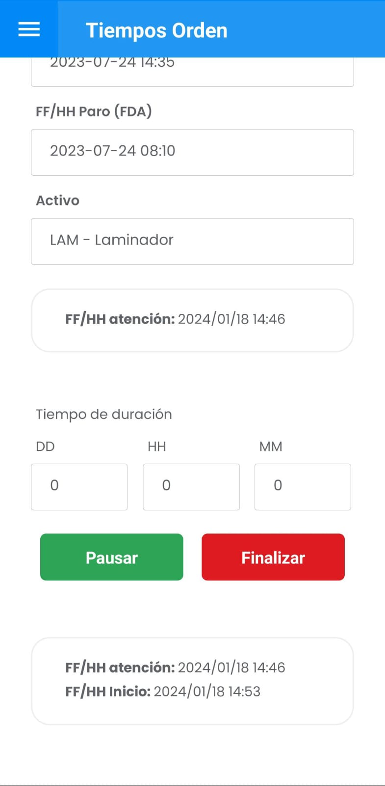 Imagen 143. AMovil - Ordenes Ingreso Automático de Tiempos
En caso de Pausar la ejecución de trabajos se prosigue con el botón Continuar , a la vez que su transcurso calcula el Tiempo de Druación (ttr) y Tiempo Improductivo (para las órdenes que aplique):
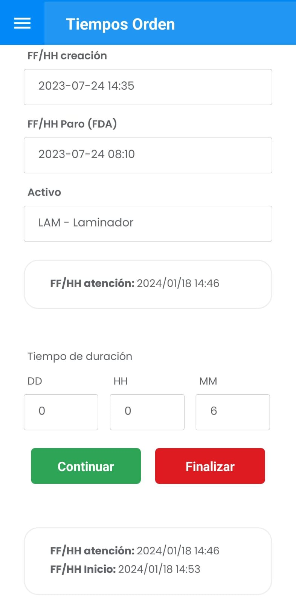 Imagen 144. AMovil - Ordenes Ingreso Automático de Tiempos
Y, al Finalizar la ejecución, se muestra el resumen de tiempos:
 Imagen 145. AMovil - Ordenes Ingreso Automático de Tiempos
Imagen 145. AMovil - Ordenes Ingreso Automático de Tiempos
 Imagen 146. AMovil - Ordenes Ingreso Automático de Tiempos
Imagen 146. AMovil - Ordenes Ingreso Automático de Tiempos
Adicionar mano obra interna
Para ingresar al personal técnico interno que participó en la ejecución de la Órden, ingrese al Detalle de la Órden de Trabajo en cuestión, seguidamente al botón <span class=”iconify icon cl-white bg-blue” data-icon=mdi-dots-vertical></span></a> y luego en :
 Imagen 147. AMovil - Ir a Ordenes Ingreso Mano Obra Interna
Imagen 147. AMovil - Ir a Ordenes Ingreso Mano Obra Interna
Al ingresar se muestra la siguiente ventana:
 Imagen 148. AMovil - Ordenes Ingreso Mano Obra Interna
Imagen 148. AMovil - Ordenes Ingreso Mano Obra Interna
Continúe dando un toque en el botón Adicionar Mano Obra Interna e ingrese los datos solicitados en el siguiente formulario:
 Imagen 149. AMovil - Ordenes Ingreso Mano Obra Interna
Imagen 149. AMovil - Ordenes Ingreso Mano Obra Interna
Guarde los cambios con el botón Guardar , donde se muestra un mensaje alerta:
 Imagen 150. AMovil - Ordenes Mensaje Alerta
Imagen 150. AMovil - Ordenes Mensaje Alerta
Continúe con el botón Aceptar donde se muestra un mensaje alerta de la mano de obra ingresada exitosamente:
 Imagen 151. AMovil - Ordenes Mensaje Alerta
Imagen 151. AMovil - Ordenes Mensaje Alerta
Una vez guardados los cambios, se muestra el detalle del personal técnico ingresado:
 Imagen 152. AMovil - Ordenes Detalle Mano Obra Interna
Imagen 152. AMovil - Ordenes Detalle Mano Obra Interna
En caso de ingresar mas personal interno, repita los pasos anteriores.
Comentarios
Para ingresar los comentarios o detalles de la ejecución ingrese al Detalle de la OT en cuestión, seguidamente al botón <span class=”iconify icon cl-white bg-blue” data-icon=mdi-dots-vertical></span></a> y luego a como se indica a continuación:
 Imagen 153. AMovil - Ir a Ordenes Comentarios
Imagen 153. AMovil - Ir a Ordenes Comentarios
A continuación se muestra el resumen de la Órden. Ingrese los detalles en el campo Comentario:
 Imagen 154. AMovil - Ordenes Comentarios
Imagen 154. AMovil - Ordenes Comentarios
Para guardar el comentario dar un toque en el botón Guardar . Se muestra un mensaje alerta y para finalizar dar un toque en Aceptar :
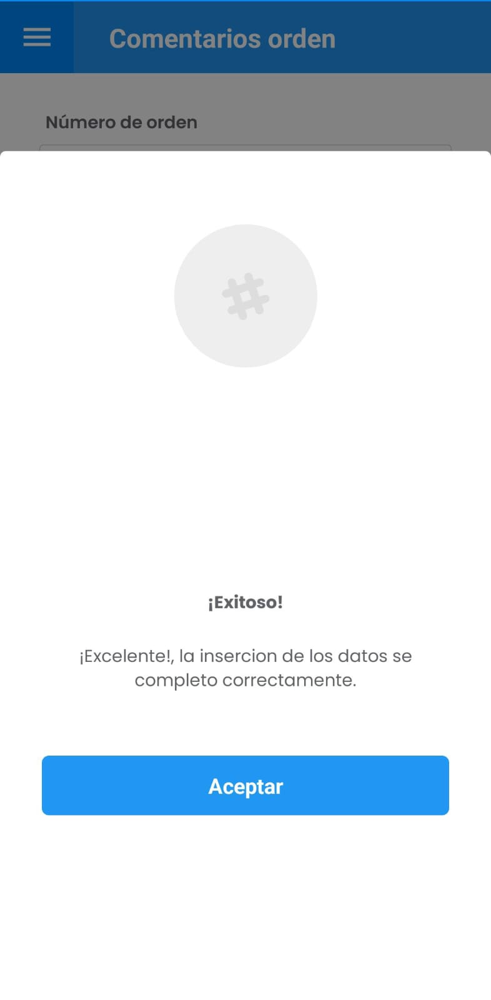 Imagen 155. AMovil - Solicitudes Mensaje Alerta Comentarios
Una vez se guarden los comentarios, se muestra el detalle en la parte inferior del usuario que registró el comentario:
 Imagen 156. AMovil - Ordenes Detalle Comentarios
Imagen 156. AMovil - Ordenes Detalle Comentarios
Para ingresar mas comentarios repita los pasos anteriores.
Multimedia
Para ingresar documentos, imágenes o videos a la OT diríjase al detalle del registro Detalle luego al botón <span class=”iconify icon cl-white bg-blue” data-icon=mdi-dots-vertical></span></a> y luego ir a como se indica a continuación:
 Imagen 157. AMovil - Órdenes Ir a Multimedia
Imagen 157. AMovil - Órdenes Ir a Multimedia
A continuación se muestra un resumen de la OT con las siguientes tres carpetas:
 Imagen 158. AMovil - Órdenes Ir a Multimedia
Imagen 158. AMovil - Órdenes Ir a Multimedia
Cada una de las carpetas indican los tipos archivos permitidos en cada una. Una vez ingresada a la carpeta, es posible devolverse con el botón Atras. Para cargar el archivo dar un toque en el botón Subir archivo , esto abre el explorador de archivos del teléfono móvil o estación donde se ejecute el proceso. Se ilustra un ejemplo añadiendo imágenes correspondientes a la OT:
Nota: Solo se permiten para las imágenes formatos jpg o png.
 Imagen 159. AMovil - Órdenes Multimedia
Imagen 159. AMovil - Órdenes Multimedia
Una vez se elija el archivo se muestra en la parte inferior su nombre, como se muestra a continuación:
 Imagen 160. AMovil - Órdenes Multimedia
Imagen 160. AMovil - Órdenes Multimedia
Para continuar, dar un toque en el botón Guardar . Se muestra el siguiente mensaje alerta:
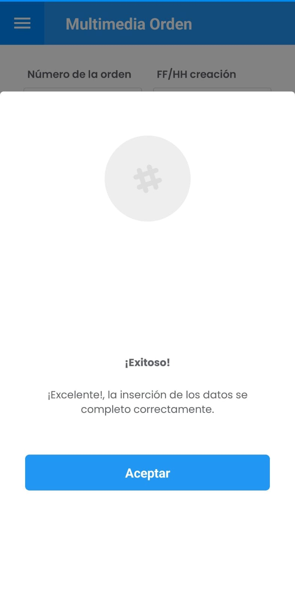 Imagen 161. AMovil - Órdenes Mensaje Alerta Multimedia
Para finalizar dar un toque en Aceptar . Diríjase al botón Atras para continuar agregando multimedia.
Una vez el registro tenga multimedia, se agrega un indicador de color naranja , así:
 Imagen 162. AMovil - Órdenes Indicador Multimedia
Imagen 162. AMovil - Órdenes Indicador Multimedia
Una vez se suba el archivo se visualiza su información de nombre y fecha del mismo, para adjuntar mas multimedia repita el proceso anterior.
Cerrar Orden
Para cerrar la Órden de Trabajo se requiere que tenga los tiempos de ejecución previamente diligenciados para cambiar el estado a Cerrada Parcial o Cerrada Ejecutada, luego, ingresar la Causa de Falla para TM (Tipo de Mantenimiento) Correctivo y luego de guardar los cambios, finalizar ingresando la firma del Responsable.
Cuando se tengan los tiempos diligenciados, diríjase al botón <span class=”iconify icon cl-white bg-blue” data-icon=mdi-dots-vertical></span></a> y luego a Cerrar Solicitud :
 Imagen 163. AMovil - Órdenes Ir a Cerrar Órden
Imagen 163. AMovil - Órdenes Ir a Cerrar Órden
A continuación se muestra el detalle del Cierre de la OT. Además, es posible que el técnico ejecutor indique si el Activo se entrega limpio.
 Imagen 164. AMovil - Órdenes Detalle Cierre
Imagen 164. AMovil - Órdenes Detalle Cierre
 Imagen 165. AMovil - Órdenes Detalle Cierre
Imagen 165. AMovil - Órdenes Detalle Cierre
Para ingresar la firma, se requiere que la OT tenga el estado Cerrada Ejecutada ó Cerrada Parcial. Este estado depende de la parametrización en AM para cerrar en AMovil.
 Imagen 166. AMovil - Órdenes Cambiar Estado
Imagen 166. AMovil - Órdenes Cambiar Estado
Continúe asignando una causa de falla si es el caso. Se muestran las opciones de Causa de Falla (Aplicable a Órdenes Correctivas). Se despliegan las Causas de Falla según la respectiva tabla de Infraestructura en AM:
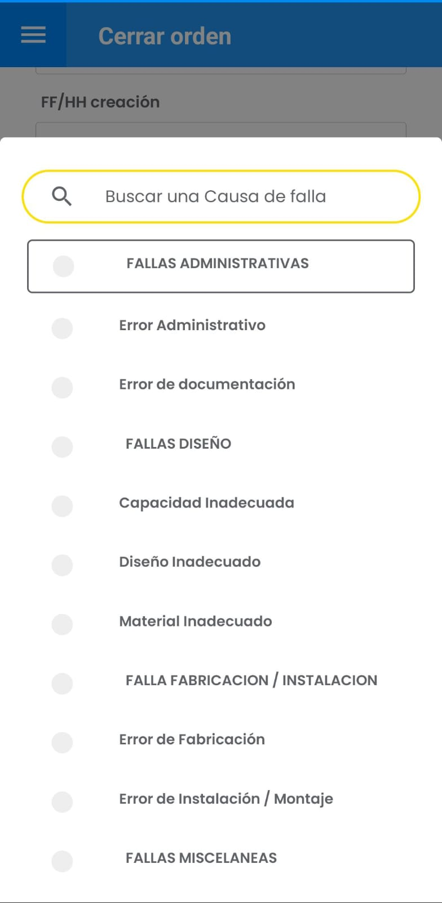 Imagen 167. AMovil - Órdenes Causa de Falla
Una vez diligencie el formulario del Cierre de la OT, se deben Guardar los cambios.
Continúe indicando si el Activo se entrega limpio: No/Si:
Imagen 168. AMovil - Órdenes Se entrega limpio
Para continuar dar un toque en el botón Firma del encargado/Ejecutor. Continúe ingresando la firma en el siguiente espacio:
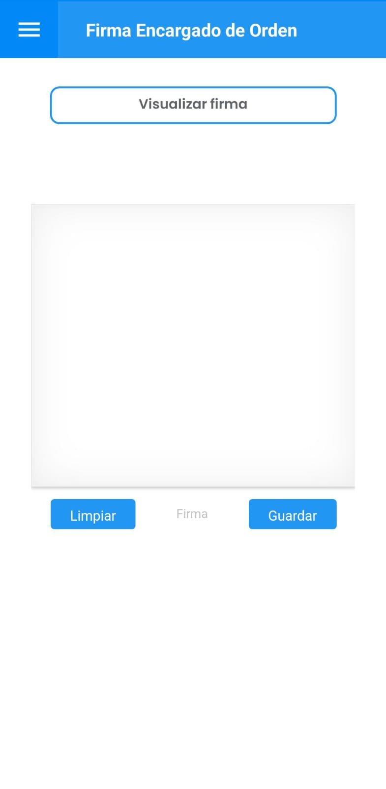 Imagen 169. AMovil - Órdenes Ingresar Firma Encargado/Ejecutor
Se puede rehacer la firma con el botón Limpiar o asentar la firma con el botón Guardar y también es posible Visualizar firma , como se muestra en el siguiente ejemplo:
 Imagen 170. AMovil - Órdenes Visualizar firma
Imagen 170. AMovil - Órdenes Visualizar firma
Una vez se guarde la firma, se muestra el siguiente mensaje alerta:
 Imagen 171. AMovil - Órdenes Cierre Mensaje Alerta
Imagen 171. AMovil - Órdenes Cierre Mensaje Alerta
Los registros que tengan la firma del Responsable Ejecutor se indican a través de un color gris , como se muestra en el siguiente ejemplo:
 Imagen 172. AMovil - Órdenes Indicador Firma
Imagen 172. AMovil - Órdenes Indicador Firma
Evaluación
Para evaluar el servicio al Responsable Ejecutor se debe ir al botón <span class=”iconify icon cl-white bg-blue” data-icon=mdi-dots-vertical></span></a> y luego a Evaluación
 Imagen 173. AMovil - Órdenes Ir a Evaluación
Imagen 173. AMovil - Órdenes Ir a Evaluación
A continuación marque su respuesta en cada pregunta, siendo:
- E: Excelente
- B: Bueno
- A: Aceptable
- D: Deficiente
- M: Malo
 Imagen 174. AMovil - Órdenes Evaluación
Imagen 174. AMovil - Órdenes Evaluación
Continúe con el botón Guardar . Luego de actualizarse se muestra el siguiente mensaje alerta:

Imagen 175. AMovil - Órdenes Registro Evaluación
Una vez guardados los cambios, en la parte inferior se habilita el botón Firma de quien recibe/Evalúa con el fin de registrar la firma del Solicitante ó persona que recibe el servicio:
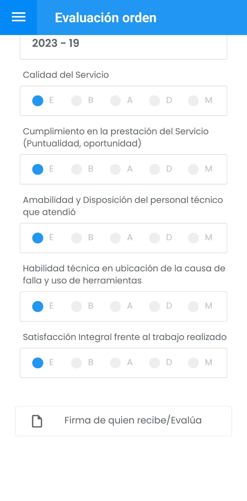
Imagen 176. AMovil - Órdenes Ir a Firma Recibido Satisfacción
Al ingresar a la opción se muestra una ventana detalle ingreso de la firma del Solicitante:
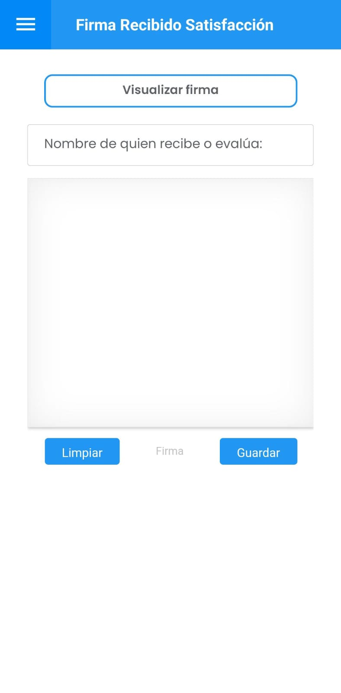 Imagen 177. AMovil - Órdenes Detalle Firma Recibido Satisfacción
Continúe ingresando registrando la firma, a continuación se muestra una ejemplo gráfico:
 Imagen 178. AMovil - Órdenes Firma Recibido Satisfacción
Imagen 178. AMovil - Órdenes Firma Recibido Satisfacción
Para guardar la firma, continúe con el botón Guardar . De lo contrario, puede rehacer la firma con el botón Limpiar .
Una vez se guarde la firma, el aplicativo muestra el siguiente mensaje alerta:
Imagen 179. AMovil - Órdenes Mensaje Alerta Firma Recibido Satisfacción
Para verificar el registro de la firma, ingrese nuevamente en el botón Firma de quien recibe/Evalúa y en el detalle del ingreso de la firma continúe a la opción Visualizar Firma :
 Imagen 180. AMovil - Órdenes Visualizar Firma Recibido Satisfacción
Imagen 180. AMovil - Órdenes Visualizar Firma Recibido Satisfacción
También, es posible saber que un registro posee la firma del Solicitante o de la persona que recibió a satisfacción a través del indicador blanco así:
 Imagen 181. AMovil - Órdenes Indicador Firma Recibido Satisfacción
Imagen 181. AMovil - Órdenes Indicador Firma Recibido Satisfacción
Firma Masiva
Esta opción se sugiere cuando un técnico responsable requiere registrar la firma tanto de él como de la persona que recibe de forma masiva para un subgrupo de Órdenes.
Es de considerar que para ejecutar esta transacción las OT requieren tener diligenciados los tiempos de ejecución y deben estar cerradas.
Nota: Desde AM se puede parametrizar el Permitir Firma de Recibido sin Evaluación en AMovil.
El objetivo ingresar la firma del Responsable Ejecutor Responsable y también de la persona que recibe a satisfacción. Para ello se sugiere usar la función Subgrupo. A continuación se muestra un ejemplo del paso a paso:
Una vez ingrese a la opción Consultar Ordenes diríjase a la opción Subgrupo mostrado a continuación:
 Imagen 182. AMovil - Consulta Órdenes
Imagen 182. AMovil - Consulta Órdenes
Haga la búsqueda por medio de los siguientes filtros en la opción </span>Seleccione un filtro, se muestran las siguientes opciones:
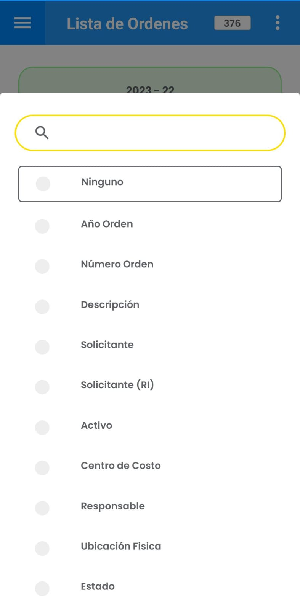 Imagen 183. AMovil - Subgrupo Órdenes
Para el ejemplo se usa el filtro Responsable, esta opción lista todos los Responsables ejecutores de la tabla de Terceros en AM, además, puede facilitar la búsqueda con el botón Buscar un Responsable e introducir una parte del nombre. Una vez lo seleccione se muestra el campo diligenciado, como se indica a continuación:
 Imagen 184. AMovil - Subgrupo Órdenes
Imagen 184. AMovil - Subgrupo Órdenes
Continúe con el botón Aceptar ubicado en la parte inferior.
Luego, visualice el resultado del Subgrupo en la parte superior a través del botón 7:
 Imagen 185. AMovil - Subgrupo Órdenes
Imagen 185. AMovil - Subgrupo Órdenes
Diríjase al botón ubicado en la parte superior derecha <span class=”iconify icon cl-white bg-blue” data-icon=mdi-dots-vertical></span></a>:
 Imagen 186. AMovil - Ir a Firma Masiva
Imagen 186. AMovil - Ir a Firma Masiva
Seguidamente elija la opción Firma Masiva De Quien Recibe :
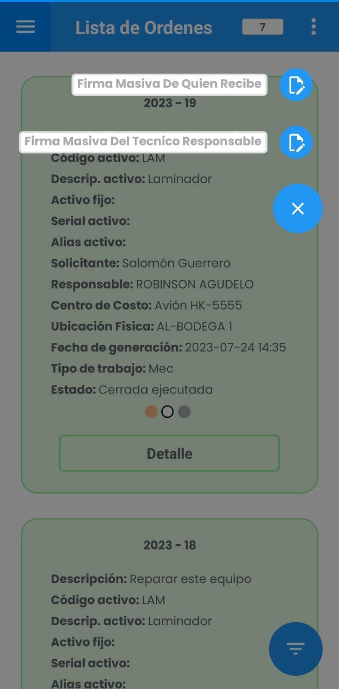 Imagen 187. AMovil - Firma Masiva Recibido Satisfacción
Para ingresar la firma, primero registre el nombre de quien recibe o evalúa en el primer recuadro de la parte superior, continúe dibujando la firma en el siguiente recuadro. Puede rehacerla con el botón Limpiar o asentarla con el botón Guardar .
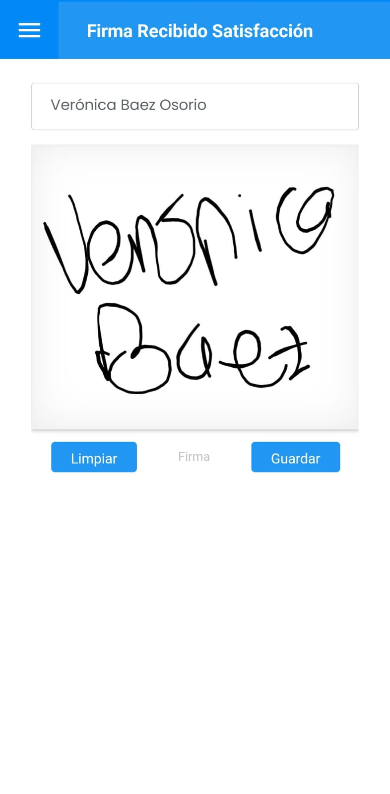 Imagen 188. AMovil - Firma Masiva Recibido Satisfacción
Al guardar la firma se muestra un mensaje alerta exitoso de ingreso. Continúe dando un toque al botón Aceptar .
 Imagen 189. AMovil - Firma Masiva Recibido Satisfacción
Imagen 189. AMovil - Firma Masiva Recibido Satisfacción
Al finalizar los registros quedan con el indicador blanco:
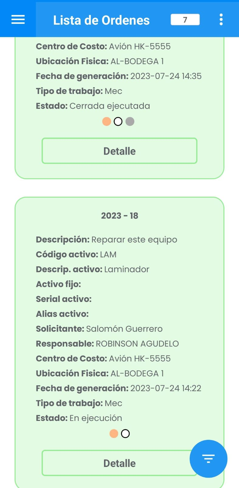 Imagen 190. AMovil - Firma Masiva Recibido Satisfacción
Diríjase al botón ubicado en la parte superior derecha <span class=”iconify icon cl-white bg-blue” data-icon=mdi-dots-vertical></span></a>:
 Imagen 191. AMovil - Ir a Firma Encargado Orden
Imagen 191. AMovil - Ir a Firma Encargado Orden
Seguidamente elija la opción Firma Masiva Del Técnico Responsable :
 Imagen 192. AMovil - Ir a Firma Encargado Orden
Imagen 192. AMovil - Ir a Firma Encargado Orden
Continúe dibujando la firma en el siguiente recuadro. Puede rehacerla con el botón Limpiar o asentarla con el botón Guardar .
 Imagen 193. AMovil - Firma Masiva Encargado Orden
Imagen 193. AMovil - Firma Masiva Encargado Orden
Al guardar la firma se muestra un mensaje alerta exitoso de ingreso. Continúe dando un toque al botón Aceptar .
 Imagen 194. AMovil - Firma Masiva Mensaje Alerta
Imagen 194. AMovil - Firma Masiva Mensaje Alerta
Al finalizar los registros quedan con el indicador gris :
 Imagen 195. AMovil - Firma Masiva Encargado Orden Indicador
Imagen 195. AMovil - Firma Masiva Encargado Orden Indicador
Crear Orden
Para crear un nuevo registro diríjase al botón Crear Orden , el cual conlleva al siguiente formulario:
 Imagen 196. AMovil - Submenú Ir a Crear Órden
Imagen 196. AMovil - Submenú Ir a Crear Órden
 Imagen 197. AMovil - Formulario Crear Órden
Imagen 197. AMovil - Formulario Crear Órden
 Imagen 198. AMovil - Formulario Crear Órden
Imagen 198. AMovil - Formulario Crear Órden
Todos los campos son obligatorios, se debe contar con los permisos para visualizar la Órden creada.
A continuación se da una breve explicación de cada campo:
Descripción: Es un texto corto por medio del cual se indica la labor a realizar. Debe ser conciso y no dar lugar a ambigüedades.
Solicitante: Es la persona que solicita la labor a realizar, puede ser escrito manualmente o ser un RI(Un responsable interno que está registrado en la tabla de Infraestructura Terceros).
Activo: Es el objeto de mantenimiento.
FF/HH Programada: Es la fecha en la que se va a realizar la labor.
Centro Responsable: Es el grupo ejecutor de mantenimiento a cargo de la labor a realizar.
Responsable: Es la persona natural o jurídica principal a ejecutar la labor de mantenimiento.
Centro de Costo: Es el “responsable”” del pago de los consumos que dicha OT genere. Inicialmente, se sugiere el Centro de Costo que tiene asociado al Activo Objeto de Mantenimiento, aun así, puede cambiarse.
Tipo de Trabajo: Indica los Tipos de Trabajo que se realizan en la OT. Es posible definir más de un Tipo de Trabajo para una OT.
Tipo de mantenimiento: Este campo indica el Tipo de Mantenimiento a realizar en la OT. Toda OT debe poseer uno. Si en la OT se va a registrar un trabajo que no corresponde a una labor de mantenimiento, en este campo se elige Otro” y a continuación, en el tipo de “Actividad” se especifica detalladamente, el tipo de labor.
Tipo de actividad: Aquí se establece el Tipo de Actividad a realizar en la OT. Este campo trabaja en coordinación con el anterior (Tipo de Mantenimiento). Si en el campo anterior se ha hecho la selección de un valor diferente de “Otro”, en el campo Tipo de Actividad se debe seleccionar un valor que defina consistentemente la labor a ejecutar.
Prioridad: Es la prioridad que tiene la OT. Las opciones van de la 1 hasta la 7, teniendo en cuenta que las prioridades mas altas son la 1 y 2.
Estado: Por defecto una OT debe tener el estado por defecto de “En ejecución”. Sin embargo, según cada organización esto es parametrizable.
Una vez diligenciado completamente el formulario contínue con el botón Guardar, el aplicativo muestra el siguiente mensaje alerta y contínue con el botón Aceptar .
 Imagen 199. AMovil - Crear Órden Mensaje Alerta
Imagen 199. AMovil - Crear Órden Mensaje Alerta
Para visualizar la OT creada no debe tener subgrupos activos:
 Imagen 200. AMovil - Crear Órden
Imagen 200. AMovil - Crear Órden